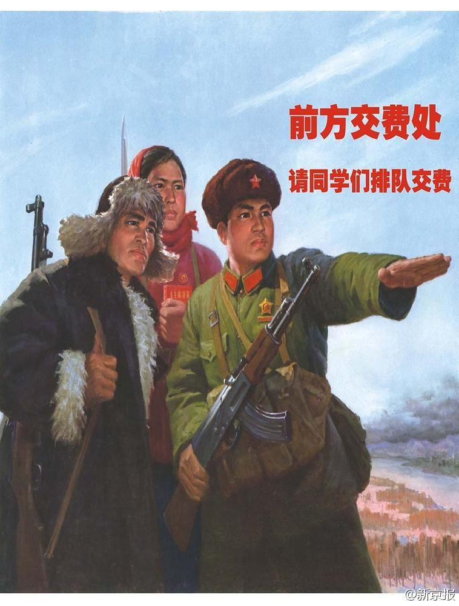

红小兵……入学的学生看了情何以堪啊…… //@尹鸿:习时代 //@夏骏:后毛时代。//@刘军宁: 全是第三帝国的艺术风格嘛@新京报:#图看中国#【郑州科技学院迎新海报】又红又专，总之亮瞎了！（大河报）郑州科技学院现迎新创意海报 大河报 
“民国时间的学术水平如何，就自然科学和社会科学而言是有国际标准的。尽管有少数科学家已经进入前沿，个别成果达到世界先进，但总的水平还是低的。人文学科……显然还处于初级阶段。……除了个别杰出人物外，总体上远没有超越清朝。而今天的总体学术水平，已经大大超越了民国时期。”说的好 //@阿忆@忆闻官微:看看葛教授的另一种说法。葛剑雄：被高估的民国学术丨集贝精选

 郑州科技学院现迎新创意海报 大河报
郑州科技学院现迎新创意海报 大河报